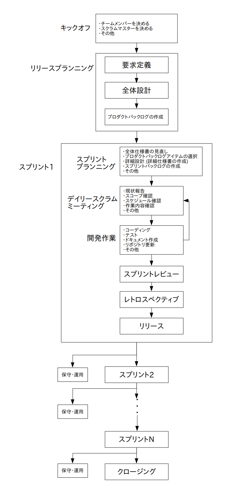

さてリリースプランニングで大まかな全体計画が出来たので、いよいよスプリントに入ります。
スプリントでは
を実施します。
スプリントが始まったらまずスプリントプランニングミーティング(スプリント計画会議)を行います。
スプリントプランニングミーティングでは
を実施します。
まず全体仕様書を見直して、もし見直しが必要だと判断したら全体仕様書とプロダクトバックログの修正をします。
次に今回のスプリントで実施するプロダクトバックログアイテムを選択します。
選択するアイテムはひとつでも複数個でも構いませんが、くれぐれもスコープ(する事や作業期間)から逸脱しない程度の個数に抑えて下さい。
次は選んだプロダクトバックログと全体仕様書を元に、今回のスプリントの詳細な作業内容を決めて詳細仕様書にまとめます。
ただし全体仕様書の様な大まかな内容ではなく、今回はかなり詳細な部分まで内容を詰める必要があります。
詳細仕様書を作成したら次はスプリントバックログを作成します。
スプリントバックログは今回のスプリントで実行するタスクリストで、基本的な作り方はプロダクトバックログと同じです。
まず詳細仕様書を元にタスク(スプリントバックログアイテムと言います)をリストアップし、依存関係や重要度や難易度などから優先順位を決めていきます。
また各作業担当者もこの時点で決めます。
ちなみにスプリントバックログアイテムもユーザー目線で書くことが大事です。